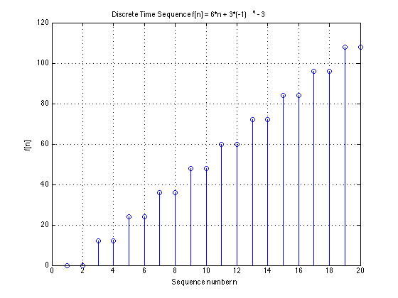
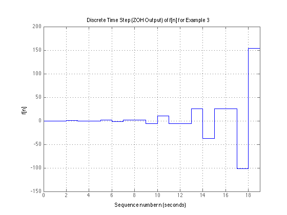

The Inverse Z-Transform
Contents
The Inverse Z-Transform#
Colophon#
An annotatable worksheet for this presentation is available as Worksheet 16.
The source code for this page is dt_systems/3/i_z_transform.ipynb.
You can view the notes for this presentation as a webpage (HTML).
This page is downloadable as a PDF file.
Scope and Background Reading#
This session we will talk about the Inverse Z-Transform and illustrate its use through an examples class.
The material in this presentation and notes is based on Chapter 9 (Starting at Section 9.6) of [Karris, 2012].
Agenda#
Inverse Z-Transform
Examples using PFE
Examples using Long Division
Analysis in MATLAB
Performing the Inverse Z-Transform#
The inverse Z-Transform enables us to extract a sequence \(f[n]\) from \(F(z)\). It can be found by any of the following methods:
Partial fraction expansion
The inversion integral
Long division of polynomials
Partial fraction expansion#
We expand \(F(z)\) into a summation of terms whose inverse is known. These terms have the form:
where \(k\) is a constant, and \(r_i\) and \(p_i\) represent the residues and poles respectively, and can be real or complex1.
Notes
If complex, the poles and residues will be in complex conjugate pairs
Step 1: Make Fractions Proper#
Before we expand \(F(z)\) into partial fraction expansions, we must first express it as a proper rational function.
This is done by expanding \(F(z)/z\) instead of \(F(z)\)
That is we expand
Step 2: Find residues#
Find residues from
Step 3: Map back to transform tables form#
Rewrite \(F(z)/z\):
We will work through an example in class.
[Skip next slide in Pre-Lecture]
Example 1#
Karris Example 9.4: use the partial fraction expansion to compute the inverse z-transform of
MATLAB solution for example 1#
See example1.mlx. (Also available as example1.m.)
Uses MATLAB functions:
collect– expands a polynomialsym2poly– converts a polynomial into a numeric polymial (vector of coefficients in descending order of exponents)residue– calculates poles and zeros of a polynomialztrans– symbolic z-transformiztrans– symbolic inverse z-transformstem– plots sequence as a “lollipop” diagram
clear all
imatlab_export_fig('print-svg') % Static svg figures.
cd matlab
format compact
Error using eval
Undefined function 'imatlab_export_fig' for input arguments of type 'char'.
syms z n
The denoninator of \(F(z)\)
Dz = (z - 0.5)*(z - 0.75)*(z - 1);
Multiply the three factors of Dz to obtain a polynomial
Dz_poly = collect(Dz)
Dz_poly =
z^3 - 2.2500*z^2 + 1.6250*z - 0.3750
Make into a rational polynomial#
\(z^2\)
num = [0, 1, 0, 0];
\(z^3 - 9/4 z^2 - 13/8 z - 3/8\)
den = sym2poly(Dz_poly)
den =
1.0000 -2.2500 1.6250 -0.3750
Compute residues and poles#
[r,p,k] = residue(num,den);
Print results#
fprintfworks like the c-language function where"%4.2f"means print a floating point number with four significant digits and 2 places of decimals.
fprintf('\n')
fprintf('r1 = %4.2f\t', r(1)); fprintf('p1 = %4.2f\n', p(1));...
fprintf('r2 = %4.2f\t', r(2)); fprintf('p2 = %4.2f\n', p(2));...
fprintf('r3 = %4.2f\t', r(3)); fprintf('p3 = %4.2f\n', p(3));
r1 = 8.00
p1 = 1.00
r2 = -9.00
p2 = 0.75
r3 = 2.00
p3 = 0.50
Symbolic proof#
% z-transform
fn = 2*(1/2)^n-9*(3/4)^n + 8;
Fz = ztrans(fn)
Fz =
(8*z)/(z - 1) + (2*z)/(z - 0.5000) - (9*z)/(z - 0.7500)
% inverse z-transform
iztrans(Fz)
ans =
2*0.5000^n - 9*0.7500^n + 8
Sequence#
n = 0:15;
sequence = subs(fn,n);
stem(n,sequence)
title('Discrete Time Sequence f[n] = 2*(1/2)^n-9*(3/4)^n + 8');
ylabel('f[n]')
xlabel('Sequence number n')
Example 2#
Karris example 9.5: use the partial fraction expansion method to to compute the inverse z-transform of
MATLAB solution for example 2#
See example2.mlx. (Also available as example2.m.)
Uses additional MATLAB functions:
dimpulse– computes and plots a sequence \(f[n]\) for any range of values of \(n\)
open example2
Error using open
File 'example2' not found.
Results for example 2#
‘Lollipop’ Plot#

‘Staircase’ Plot#
Simulates output of Zero-Order-Hold (ZOH) or Digital Analogue Converter (DAC)

Example 3#
Karris example 9.6: use the partial fraction expansion method to to compute the inverse z-transform of
MATLAB solution for example 3#
See example3.mlx. (Also available as example3.m.)
open example3
Error using open
File 'example3' not found.
Results for example 3#
Lollipop Plot#

Staircase Plot#

Inverse Z-Transform by the Inversion Integral#
The inversion integral states that:
where \(C\) is a closed curve that encloses all poles of the integrant.
This can (apparently) be solved by Cauchy’s residue theorem!!
Fortunately (:-), this is beyond the scope of this module!
See Karris Section 9.6.2 (pp 9-29—9-33) if you want to find out more.
Inverse Z-Transform by the Long Division#
To apply this method, \(F(z)\) must be a rational polynomial function, and the numerator and denominator must be polynomials arranged in descending powers of \(z\).
We will work through an example in class.
[Skip next slide in Pre-Lecture]
Example 4#
Karris example 9.9: use the long division method to determine \(f[n]\) for \(n = 0,\,1,\,\mathrm{and}\,2\), given that
MATLAB solution for example 4#
See example4.mlx. (also available as example4.m.)
open example4
Error using open
File 'example4' not found.
Results for example 4#
sym_den =
z^3 - (3*z^2)/2 + (11*z)/16 - 3/32
fn =
1.0000
2.5000
5.0625
....
Combined Staircase/Lollipop Plot#

Methods of Evaluation of the Inverse Z-Transform#
Partial Fraction Expansion#
Advantages
Most familiar.
Can use MATLAB
residuefunction.
Disadvantages
Requires that \(F(z)\) is a proper rational function.
Inversion Integral#
Advantage
Can be used whether \(F(z)\) is rational or not
Disadvantages
Requires familiarity with the Residues theorem of complex variable analaysis.
Long Division#
Advantages
Practical when only a small sequence of numbers is desired.
Useful when z-transform has no closed-form solution.
Disadvantages
Can use MATLAB
dimpulsefunction to compute a large sequence of numbers.Requires that \(F(z)\) is a proper rational function.
Division may be endless.
Summary#
Inverse Z-Transform
Examples using PFE
Examples using Long Division
Analysis in MATLAB
Coming Next
DT transfer functions, continuous system equivalents, and modelling DT systems in Matlab and Simulink.
Reference#
See Bibliography.
Answers to Examples#
Answer to Example 1#
Answer to Example 2#
Answer to Example 3#
Answer to Example 4#
\(f[0] = 1\), \(f[1] = 5/2\), \(f[2] = 81/16\), ….